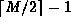

Data Structures and Algorithms
with Object-Oriented Design Patterns in Java
Data Structures and Algorithms
with Object-Oriented Design Patterns in JavaThe algorithm for removing items from a B-tree is similar to the algorithm for removing item from an AVL tree. That is, once the item to be removed has be found, it is pushed down the tree to a leaf node where it can be easily deleted. When an item is deleted from a node it is possible that the number of keys remaining is less than . In this case, balancing is necessary.
The algorithm of balancing after deletion is like the balancing after insertion in that it progresses from the leaf node up the tree toward the root. Given a node T which has keys, there are four cases to consider.
In the first case, T is the root. If no keys remain, T becomes the empty tree. Otherwise, no balancing is needed because the root is permitted to have as few as two subtrees and one key. For the remaining cases T is not the root.
In the second case T has keys
and it also has a sibling immediately on the left
with at least  keys.
The tree can be balanced by doing
an LL rotation
as shown in Figure
keys.
The tree can be balanced by doing
an LL rotation
as shown in Figure  .
Notice that after the rotation,
both siblings have at least keys.
Furthermore, the heights of the siblings remain unchanged.
Therefore, the resulting tree is a valid B-tree.
.
Notice that after the rotation,
both siblings have at least keys.
Furthermore, the heights of the siblings remain unchanged.
Therefore, the resulting tree is a valid B-tree.
Figure: LL rotation in a B-tree.
The third case is the left-right mirror of the second case.
That is, T has keys
and it also has a sibling immediately on the right
with a least  keys.
In this case, the tree can be balanced by doing an
RR rotation .
keys.
In this case, the tree can be balanced by doing an
RR rotation .
In the fourth and final case, T has keys,
and its immediate sibling(s) have keys.
In this case, the sibling(s) cannot give-up a key in a rotation
because they already have the minimum number of keys.
The solution is to merge
T with one of its siblings
as shown in Figure .
Figure: Merging nodes in a B-tree.
The merged node contains keys from T,
keys from the sibling,
and one key from the parent (the key x in Figure ).
The resulting node contains keys altogether,
which is M-2 if M is even and M-1 if M is odd.
Either way, the resulting node contains no more than M-1 keys
and is a valid B-tree node.
Notice that in this case a key has been removed from the parent of T.
Therefore, it may be necessary to balance the parent.
Balancing the parent may necessitate balancing the grandparent,
and so on, up the tree to the root.
 Copyright © 1998 by Bruno R. Preiss, P.Eng. All rights reserved.
Copyright © 1998 by Bruno R. Preiss, P.Eng. All rights reserved.